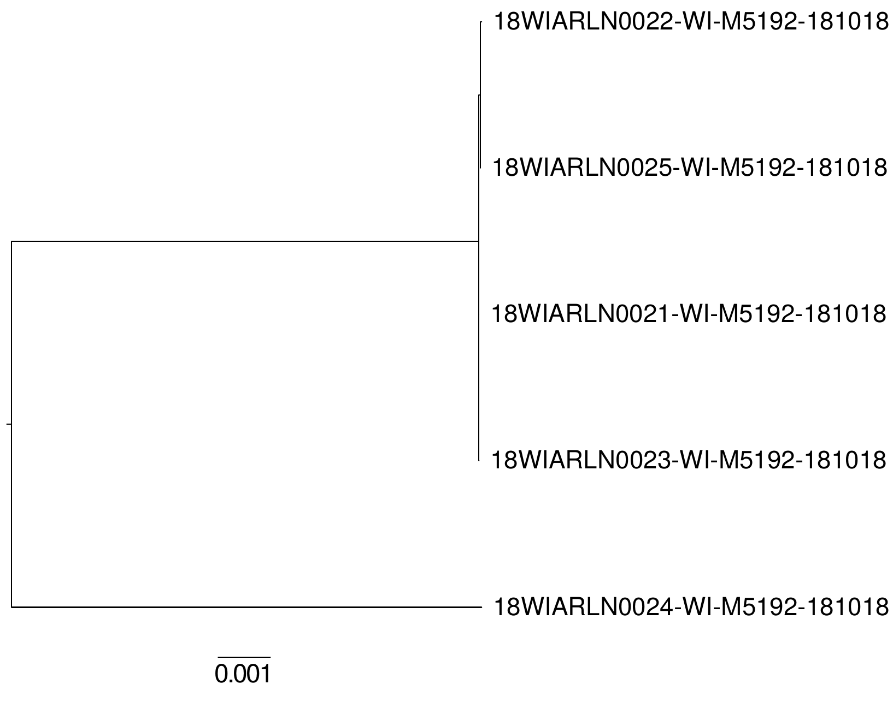
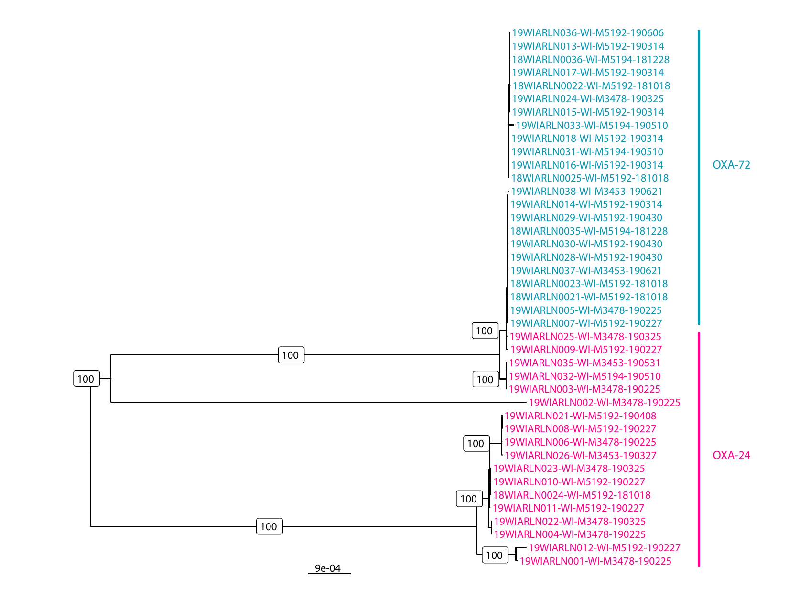
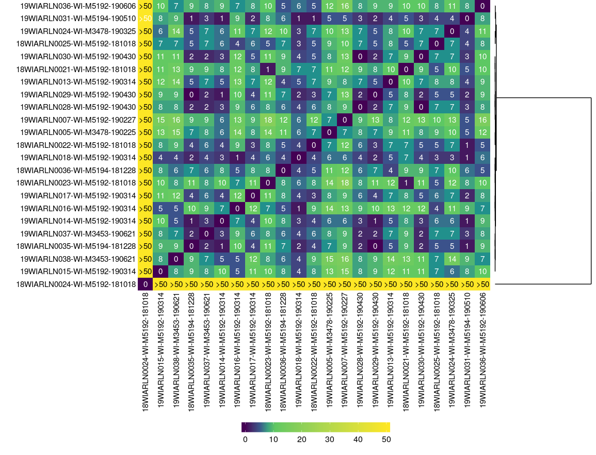

Outbreak of highly resistant A. baumannii in Wisconsin care facilities: an in-depth genetic characterization
Kelsey Florek, MPH, PhD 2019 AMD 2-Day September 23, 2019
Slides live from:
www.k-florek.net/talks
Overview
- Inital Case
- Outbreak Investigation
- Genetic Characterization
September 2018
- Patient at facility A with a lower respiratory infection 3 months after a heart transplant
- Respiratory cultures revealed a carbapenem resistant A. baumannii
- Treatment:
- Polymixin-B
- Meropenem
- Colistin
- Cefiderocol as compassionate treatment
- Patient passed away, unclear if cause was sepsis
- 5 additional patients from Facility A had sputum cultures that were positive for carbapenem resistant A. baumannii
- Wisconsin State Laboratory of Hygiene
Determining relatedness
Antimicrobial susceptibility
- Amikacin: Resistant
- Aztreonam: Resistant
- Cefepime: Resistant
- Cefotaxime: Resistant
- Ceftazidime: Resistant
- Ciprofloxacin: Resistant
- Colistin: Susceptible
- Doripenem: Resistant
- Doxycycline: Resistant
- Gentamicin: Resistant
- Imipenem: Resistant
- Levofloxacin: Resistant
- Meropenem: Resistant
- Minocycline: Intermediate
- Piperacillin-tazobactam: Resistant
- Polymyxin-B: Susceptible
- Ticarcillin-clavulanate: Resistant
- Tobramycin: Resistant
- Trimethoprim-sulfamethoxazole: Resistant
Outbreak isolates are OXA-72
Case Definitions
Probable
- Carbapenem resistant A. baumannii clinical isolate with outbreak AST profile
Confirmed
- Carbapenem resistant A. baumannii clinical isolate genetically clustering with other outbreak isolates and harboring the OXA-24/40-like β-lactamase OXA-72
Case Definitions
Probable (n=43)
- Carbapenem resistant A. baumannii clinical isolate with outbreak AST profile
Confirmed (n=22)
- Carbapenem resistant A. baumannii clinical isolate genetically clustering with other outbreak isolates and harboring the OXA-24/40-like β-lactamase OXA-72
OXA-72 isolates cluster together
OXA-72 isolates cluster together
OXA-72 plasmid

10 Second Synopsis
- Highly resistant A. baumannii's are a real threat
- Sequencing was the only way to distinguish relatedness and OXA mechanism
- Long reads useful in resolving mechanism location and transferability
Acknowledgements
- Wisconsin State Laboratory of Hygiene
- Abigail Shockey
- Allen Bateman
- Sara Wagner
- Wisconsin Department of Public Health
- Megan Lasure
- Lina Elbadawi
- Froedtert and The Medical College of Wisconsin
- L Silvia Munoz-Price
- Abigail Shockey
- Allen Bateman
- Sara Wagner
- Megan Lasure
- Lina Elbadawi
- L Silvia Munoz-Price
special thanks to:

Office of Molecular Detection
Office of Molecular Detection